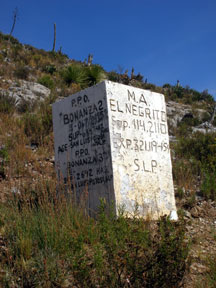

|
THIS IS AN ARCHIVED SITE - ESTE ES UN SITIO ARCHIVADO |
|
Please visit
https://www.realde14.com for the current
site |
|
Visite
https://www.realde14.com para ver el sitio actual |
| Home |
Town |
Area |
History |
Links |

The white claim marker is still a legal boundary for Norabec's El Negrito concession on their Real de Catorce property.| Neglect
by man and the ravages of time have had their effect on the Negrito
chapel. By the turn of the present century only half of the dome and
three supporting corners remained. Now all that is left are these
photos. |
||
| 1986 | March 2004 | November 2007 |
| 1986 | March 2004 | November 2007 |
| 1986 |
March 2004 |
November 2007 |
| The
above views show the continuing deterioriation of the ruins at the El
Negrito mine. What was a complete dome with all four corners intact in
the late1980's is now almost totally collapased. |
||
An view of the upper parts of the old Negrito mine in November of 2007, including the
structure with the collapsed chapel. The road below the ruins is for
access to an exploration drilling pad by the current mining concession.